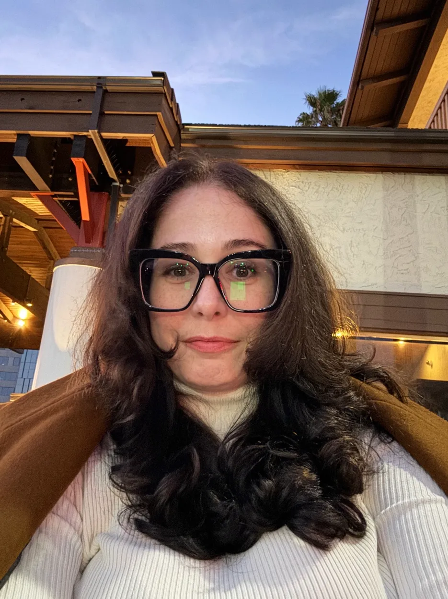

Hi, I'm Courtney, your neighbor over in Greenway Terrace. I've been here for 10 years and my family has been in this neighborhood since it was built. I put this project together to help us get as many trees as possible to as many homes as possible.
I applied for the City of Phoenix Community Canopy grant for the homes in the Greenway Terrace subdivision only. We won. The city then expanded eligibility to over 600 homes in the surrounding area, which means more of our neighbors can benefit.
Have you ever wondered why our neighborhood isn't built in straight lines? Or why the houses all sit at slightly different angles on their lots?
They don't build them like they used to.
Our homes, and more importantly our trees, were strategically placed based on the science of Sun Path Diagrams and Shadow Analysis. These tools map exactly where the sun will be at any time of day, any day of the year, and predict how shadows will move across properties throughout the seasons. Mid-century builders used this science to angle houses and position trees so that a single tree could shade your house in the morning and your neighbor's driveway in the afternoon. It was intentional. It was brilliant.
And over time, we've lost it.
As trees have come down from storms, age, and disease, we've lost the shade that once kept our homes cool. I know that when older homes start showing their age, our first instinct is to slash and burn. Add different windows. Tear things down. But what we should really be doing is reclaiming the heat mitigation strategies that were already here. These gorgeous mid-century ranch homes were designed to stay cool. We just need to restore what made them work.
I applied for this grant for one simple reason: my trees died and I'm not in a financial place to replace them. This website, the eligibility bot, and the tree placement tool? I built those to make this process easier for all of us.
Join me in bringing the shade back.